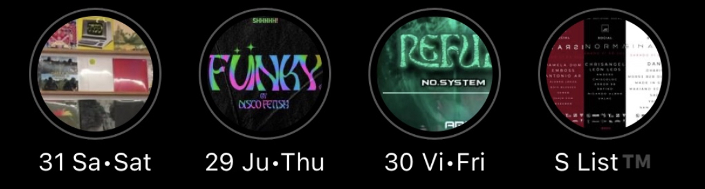

<section class="section section-lg pt-0 @@classes">
    <div class="container">
        <div class="row align-items-center justify-content-around">
            <div class="col-md-6 col-xl-6 mb-5">
                <div class="card bg-primary shadow-soft border-light organic-radius p-3">
                    
                </div>
            </div>
            <div class="col-md-6 col-xl-5 text-center text-md-left">
                <h2 class="h1 mb-4">The S List story in short.</h2>
                <p class="lead">"@slistcdmx" was initially a seperate IG account for me to follow all the people in the CDMX underground music scene. When I realized
                    how poorly informed my local friends were about events in their own city, I started mass following people to spread the word.
                </p>
                <p class="lead">That got the first account got banned. And then the second as well. So now we're onto the third. This website will point to the current
                    S List handle. <br>800+ -> 150 -> 25. This is the comeback story.
                </p>
                
            </div>
        </div>
    </div>
</section>